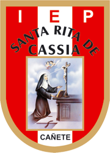

Este es un colegio comprometido con la educación de calidad.
Brindamos enseñanzas y estudios óptimos para el público femenino con altos estándares, formando no solo estudiantes competentes sino ciudadanas con habilidades desarrolladas, tanto con la inteligencia cognitiva como creativa, capaz de razonar y crear, dedicándose óptimamente a las señoritas de Cañete. Diferenciándonos por el realce y apoyo que brindamos a sus distintas capacidades.
Ser la mejor institución educativa pública de CAÑETE que forme a estudiantes que encabecen las competencias a nivel nacional, siendo reconocida por sus excelentes estrategias para desarrollar a sus estudiantes.